Joe Blochberger, PE
Chief Scientist, Engineering Assistant Program Manager, and Senior Professional Staff II at the Johns Hopkins University Applied Physics Laboratory, and PhD candidate in Civil and Systems Engineering at Johns Hopkins, affiliated with the Johns Hopkins Center for Systems Science and Engineering. Research spans signal and systems analysis, engineering decomposition methods, and applied machine learning / artificial intelligence use cases in acoustics. Avid researcher translating over a decade of traditional engineering experience into exploring patterns from data in cancer care, computational systems modeling, public health, and economics.
Research Portfolio
Eight projects, most recent first, with figures
Research Overview
Problem, gap, and the tri-layer solution
Dissertation Progress
Timeline, chapters, milestones, updates
Publications
Preprint, whitepaper, papers in preparation
Code
MATLAB model, verification workflow
Gallery
Reproducible model figures
Blog
Updates from the PhD journey
About Me
Contact
Joseph Blochberger
Department of Civil & Systems Engineering
The Johns Hopkins University
3400 N. Charles St.
Baltimore, MD 21218
jblochb2@jhu.edu
Professional service includes chairing an annual American Society of Mechanical Engineers (ASME) session on analytical, computational, and machine-learning methods in dynamics, vibration, and acoustics; committee service on the ASME Technical Committee on Vibration and Sound and ASME Noise Control and Acoustics Division; and service as a reviewer for IEEE Sensors and other professional societies.
Research Interests: Creativity in Engineering Design, Operations Research, Predictive Analytics, Probability & Stochastic Processes, Signal Processing, Systems Engineering, Systems Science
Background
Education
The Johns Hopkins University
PhD Candidate, Civil & Systems Engineering
PhD candidate advised by Professor Tak Igusa, while working full-time at JHU/APL. Research includes an agent-based model of emergent segregation patterns, machine-learning post-simulation analysis, and dynamic analysis for energy systems and topology optimization projects. Active contributor to the JHU Center for Systems Science and Engineering (CSSE).
The Johns Hopkins University
Post-Masters Certificate, Electrical & Computer Engineering
Graduate study in signal processing, machine learning, applied probability and stochastic processes, and detection and estimation theory, while working full-time as an engineering project manager.
The Pennsylvania State University (Penn State)
Master of Science, Mechanical Engineering
Graduate study in computational mechanics (linear and nonlinear finite element analysis), mechanical vibration, and engineering acoustics, while working full-time as an engineer.
Virginia Polytechnic Institute and State University (Virginia Tech)
Bachelor of Science, Mechanical Engineering
Two engineering internships, at Kollmorgen Motors Division and General Dynamics Electric Boat, while working part-time at the Virginia Tech Bookstore and Math Emporium. Undergraduate research under Professor Lei Zuo on energy-harvesting shock absorbers, and under Professor Chris Fuller on an autonomous acoustic monitoring system for the NASA Langley Research Center. Minor in Engineering Science and Mechanics.
Virginia Department of Professional and Occupational Regulation
Licensed Professional Engineer
Work
The Johns Hopkins University Applied Physics Laboratory (JHU/APL)
Assistant Program Manager • Engineering Analyst
- Appointed Assistant Program Manager for technical expertise in acoustic and engineering systems analysis and demonstrated leadership.
- Guides five project managers and technical staff across laboratory test and evaluation, sonar performance analysis, database and tool management, data inventory, and financial analysis.
- Experience spans engineering acoustics, systems engineering, noise control engineering, naval shipbuilding design, project management, and test and evaluation of sonar systems and capabilities.
- Technical depth in engineering acoustics includes finite element modeling of structural vibration, structure-borne sound radiation, end-to-end sonar system evaluation, and signal processing.
The Johns Hopkins University Department of Civil & Systems Engineering (JHU CaSE)
Graduate Student
- Service to the American Society of Mechanical Engineers (ASME) Noise Control & Acoustics Division includes independent peer review of publication submissions, topic organizer for the International Mechanical Engineering Congress & Exposition (IMECE), and session chair at IMECE.
General Dynamics Electric Boat (GDEB)
Signatures Engineer
- Cognizant signatures engineer for the general arrangement and detailed design phase of engineering drawing development.
- Coordinated with engineering departments and shipyard operations to meet submarine stealth requirements throughout the product lifecycle.
- Developed a variety of analytical and computational models, augmented and refined by empirical data, to understand the physics of sound, of structures, and of the interaction between the two.
Proficiencies
Languages: MATLAB, MySQL, Mathematica, Octave, R, Python, CSS, HTML, Javascript
Skills: Acoustics, Analyzing Sensor Data, Applied Probability / Statistics, Test & Evaluation, Mechanical Engineering, Noise Control, Project Management, Sonar, Signal Processing, Systems Engineering, Vibrations
Portfolio
Research Portfolio
Active and recent research, most recent first. Expand a card for method, results, and figures. Figures are reproduced from the manuscript or generated from the analysis code.
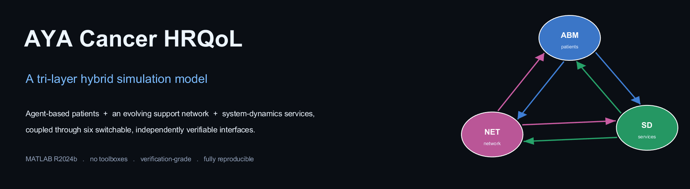
Quality of Life After Cancer, Simulated Layer by Layer
A tri-layer hybrid simulation of health-related quality of life from diagnosis through survivorship in adolescent and young adult cancer, coupling agent-based patients, an evolving peer-support network, and system-dynamics services through six independently switchable interfaces.
Details (2025–2026, in progress)
Health-related quality of life (HRQoL) among patients diagnosed between ages 15 and 39 stays below general-population norms for years after treatment, and the deepest, most persistent shortfalls appear in physical and emotional functioning. Observational cohorts sample a handful of time points, so the joint evolution of heterogeneity, social support, and service capacity stays outside what such designs can represent.
A structured triage of 944 bibliographic records, of which 237 were judged relevant, confirms established use of system-dynamics, agent-based, and network methods in oncology. Only 9 works exhibit bidirectional cross-method coupling, and none combine an agent-based patient model, a social-support network, and system dynamics for the adolescent and young adult population.
The response is a tri-layer architecture with six formally specified, independently switchable interfaces, an ablation protocol under which every layer has to earn inclusion, and a no-leak verification proving that each disabled switch removes exactly one effect. Verification is complete. Behavioral validity is pattern-oriented, and predictive validity against an external cohort remains open under a pre-registered data request, so the model serves as a theory and decision-support scaffold rather than an individual prognostic tool.
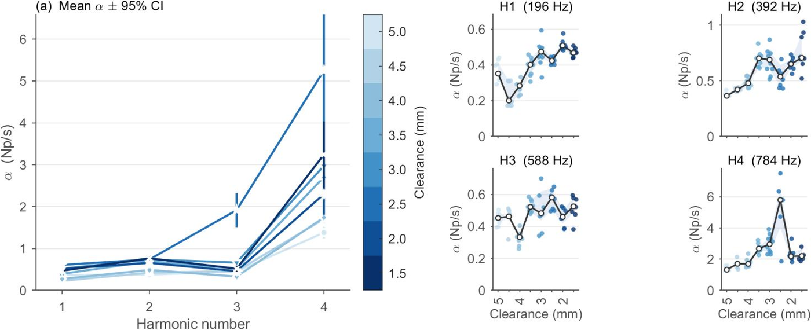
The Electric Guitar Pickup as a Magnetic Damper
Direct-inject recordings across an eight-step clearance sweep quantify how a single-coil magnet removes energy from individual harmonics of a ferromagnetic guitar string, and where magnetic damping overtakes mechanical damping.
Details (2026, accepted for November 2026)
Digital waveguide synthesis and the Karplus–Strong algorithm assume ideal boundary conditions and uniform exponential decay across every harmonic. A real electric guitar places a permanent magnet within millimeters of a ferromagnetic string, so the string carries a position-dependent force on top of the tension-based restoring force.
An unwound G string was recorded through a direct-inject path at clearances from 5.00 mm down to 1.50 mm. Onset detection by amplitude envelope time-aligns the takes, short-time Fourier analysis resolves decay per harmonic, and a calibrated Karplus–Strong reference isolates the magnetic contribution by subtraction. Bootstrap resampling over 2000 iterations supplies nonparametric 95 percent confidence intervals.
Damping proves strongly harmonic-selective. The fundamental changes by a factor of 1.3 to 1.6 across the sweep, while the fourth harmonic changes by a factor of 3.8, and the equivalent T60 of the fourth harmonic falls from 5.0 s to 1.3 s, an audible loss of high-harmonic sustain. Magnetic and mechanical contributions become equal for the fourth harmonic near 3.0 to 3.5 mm, and the magnetic term reaches 2.8 times the mechanical term at 2.5 mm. One-way analysis of variance resolves significant clearance effects for three of the four harmonics. The fitted power-law exponent clusters near 1.0 and rises to 1.48 at 2.5 mm, well above the frequency-independent eddy-current prediction and below the jerk-dominated limit of 2. A localized reversal at 2.0 mm is retained in every table and excluded from trend fitting.
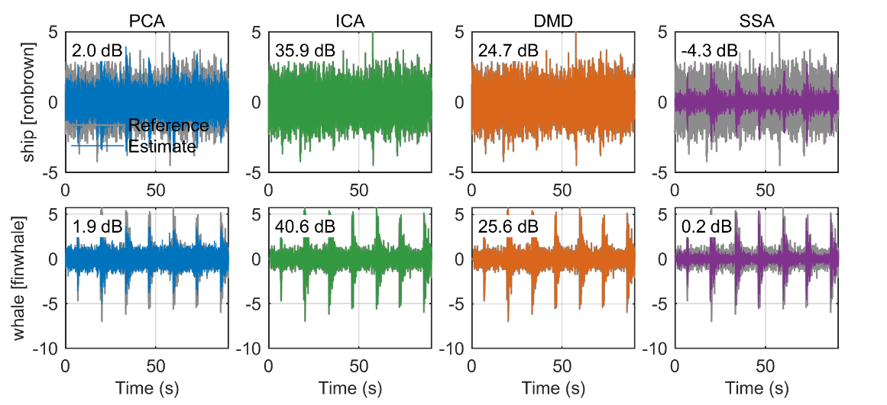
Blind Source Separation of Ship Noise and Whale Calls
Four unsupervised separation methods are compared on a shipping and fin-whale mixture, first at the matched-model ceiling and then under noise and multipath, where every ceiling collapses.
Details (2026, accepted for November 2026)
Principal component analysis, independent component analysis, singular spectrum analysis, and time-delay dynamic mode decomposition are applied to a two-source instantaneous mixture built from a NOAA Ship Ronald H. Brown recording and a fin whale recording. Kurtosis separates the two sources by two orders of magnitude, and the leading principal component explains 80 to 82 percent of the variance in every analysis domain, so variance concentration is close to domain-invariant for a rank-2 mixture.
Under matched instantaneous mixing, independent component analysis leads every metric with a source-averaged scale-invariant signal-to-distortion ratio of 38.25 dB over 30 random mixing matrices, followed by time-delay dynamic mode decomposition at 24.95 dB. Principal component analysis saturates near 1.6 dB and singular spectrum analysis stays negative.
A robustness study of 1680 runs across seven signal-to-noise levels and both mixing models changes the picture. Under convolutive mixing the independent-component ceiling falls from 38.2 dB to 7.1 dB even without noise, and the time-delay ceiling falls to 1.5 dB because a minimal delay embedding cannot span echoes of 5 to 50 ms. The high instantaneous figures are therefore matched-model ceilings rather than expected field performance. Embedding depth trades separation accuracy against modal interpretability: a depth of 2 separates best, while a depth of 12 exposes a complex-conjugate eigenvalue pair near the unit circle at 19.0 Hz.
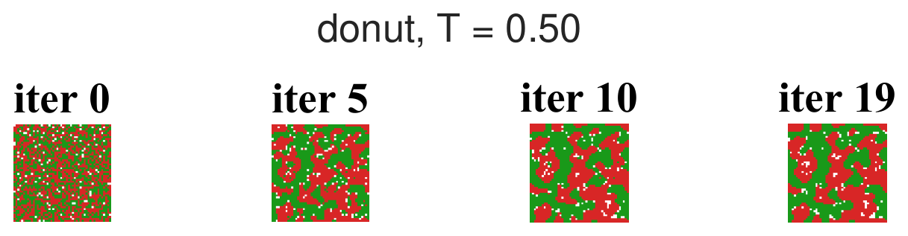
Two Order Parameters for the Schelling Segregation Model
Sparsity-promoting and multi-resolution dynamic mode decomposition are coupled to extract a ranked, multi-scale modal hierarchy from Schelling lattice simulations, supplying order parameters that a single segregation index cannot provide.
Details (2026, manuscript in preparation)
The segregation model of Schelling links micro-level preference to macro-level structure, yet the spatiotemporal record has been summarized mainly through scalar indices measured near the absorbing state. A hybrid pipeline couples sparsity-promoting dynamic mode decomposition, which supplies an energy ranking through L1-regularized amplitudes solved by the alternating-direction method of multipliers, with multi-resolution dynamic mode decomposition, which separates rapid initial relaxation from slow patch coarsening.
Two complementary order parameters emerge. The modal-energy fraction decreases monotonically with tolerance, while the neighbor-based spatial correlation is non-monotonic, deepening in segregation just below the frustration threshold and collapsing beyond it. Divergence between the two resolves three regimes that no single index can distinguish: convergent segregation, a critical band of slow but strong segregation, and frustrated mixing. Both parameters place the transition at the discrete Moore-neighborhood tolerance of 0.75 to 0.76.
Boundary geometry decides what survives the transition. Regular periodic compartmentalization retains modal structure deep in the frustrated regime, because each enclosed compartment sustains a locally segregated pocket. The open torus, a digitized 1941 Baltimore slum-clearance boundary, and scattered random obstacles all collapse to a structureless field. One limitation is stated plainly in the manuscript: the modal hierarchy characterizes the transition without anticipating it.
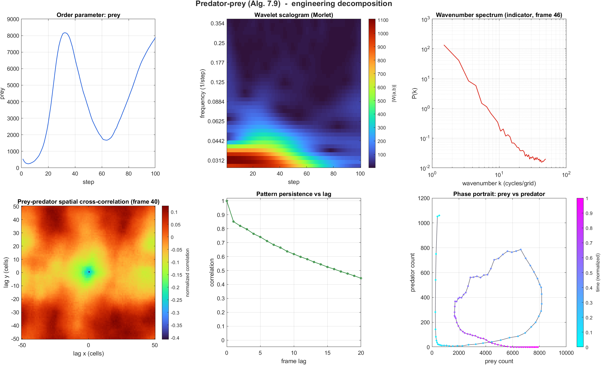
Time-Resolved Decomposition of Agent-Based Model Dynamics
Eleven canonical agent-based models spanning four structural classes are put through one decomposition pipeline, and every decomposition is rendered as a movie that advances in step with the simulation that produced it.
Details (2024–2026, ongoing)
Decomposition methods matured in fluid mechanics and structural dynamics, where the state is a field sampled on a grid. An agent-based model produces the same kind of high-dimensional spatiotemporal record, so the tooling transfers whenever the simulation layer is reproducible and the state can be written as a snapshot matrix.
None of the four methods is new. Continuous wavelet analysis of an order parameter, radially averaged spatial power spectra, normalized cross-correlation, and phase portraits are all standard, and each carries an established history on systems of exactly this class. The contribution is treatment rather than method: decompositions are time-resolved and shown against the generating simulation instead of reported at a single instant, one pipeline spans lattice, continuous-space, network, and profile models, and spectra are computed on indicator fields rather than on categorical state codes.
The analysis frame is selected by maximum lag-1 spatial autocorrelation rather than defaulting to the final state, which is frequently degenerate: a burnt-out forest or a fully diffused field carries no spatial structure left to transform.
Foreground/Background Separation with Dynamic Mode Decomposition: Pulling a Moving Car Out of a Static Road
One MATLAB program separates slowly varying video background from moving foreground using ordinary, sparsity-promoting, multi-resolution, and hybrid dynamic mode decomposition, all sharing a single video read and a common set of metrics.
Details (2022, toolkit revised 2026)
Grayscale frames form a snapshot matrix, and the standard reduced-order construction supplies modes, eigenvalues, and amplitudes. Modes with a continuous-time frequency below a threshold constitute the background, and the signed remainder becomes the foreground, so the two parts reconstruct the source exactly.
Four variants share the same core. Ordinary decomposition fits amplitudes from the first frame. Sparsity-promoting decomposition solves the L1-regularized amplitude problem by the alternating-direction method of multipliers and then removes shrinkage bias by refitting on the retained support. Multi-resolution decomposition bisects the time horizon into a binary tree and extracts slow modes at every level. The hybrid applies the sparsity-promoting step inside each node of the tree, combining temporal localization with sparse modal support.
Calling the toolkit with the comparison option returns all four result structures together with a summary figure covering runtime, retained and background mode counts, tree size, visible foreground percentage, foreground magnitude, and background temporal variation, with ordinary decomposition serving as the zero-percent baseline.
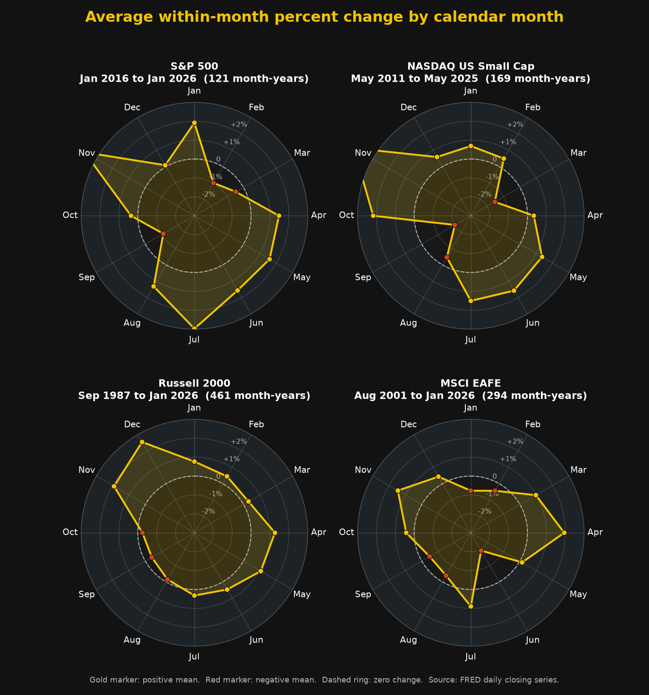
Financial Data Meets Engineering Analysis: Calendar Risk Across Four Equity Benchmarks
Daily closing series are grouped by calendar month to measure average within-month percent change, testing how far a familiar seasonality pattern holds across large-cap, small-cap, and developed-international benchmarks.
Details (January 2026)
Each daily closing series is grouped by calendar month, the percent change is taken between the first and last observation of each month-year, and the mean is formed across years. The polar layout places January at the top and marks zero change with a dashed ring, so any month with a negative mean falls inside the ring.
Coverage differs by benchmark and is read from the files rather than assumed. The Russell 2000 supplies the longest record at 461 month-years from September 1987, MSCI EAFE contributes 294 month-years from August 2001, the NASDAQ small-cap series contributes 169 month-years from May 2011, and the FRED S&P 500 series reaches back only to January 2016 for 121 month-years.
September carries a negative mean in all four benchmarks, ranging from −0.40 percent for the Russell 2000 to −2.03 percent for the NASDAQ small-cap series. November is positive in all four and is the strongest month in three of them. The short S&P 500 window is the weakest evidence in the set: a seasonality claim resting on ten years of coverage is far more fragile than one resting on thirty-eight.
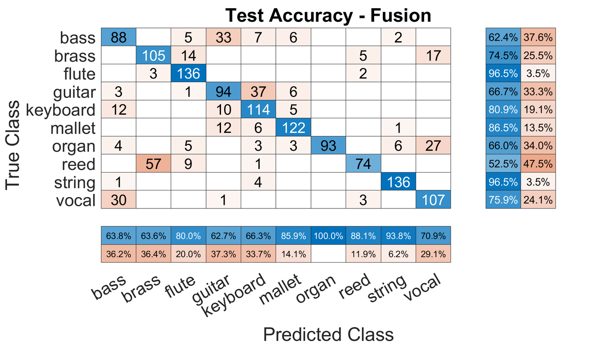
Late Fusion of Convolutional and Wavelet Scattering Classifiers
A two-dimensional convolutional network trained on mel spectrograms and a wavelet scattering ensemble are combined at the decision stage. Every classification metric on the NSynth instrument families improves over either classifier used alone.
Details (2022)
Ten NSynth instrument families supply the label set. Mel spectrograms computed with a 2048-sample Hann window, 50 percent overlap, a 4096-point transform, and 512 bands serve as image input to a two-dimensional convolutional network, while a wavelet scattering ensemble works on the same audio through a complementary representation. The two classifiers are combined at the decision stage rather than at the feature stage.
Fusion outperforms every single-model approach attempted on the project. Accuracy reaches 95 percent against 90 percent for the Python two-dimensional network, 88 percent for the one-dimensional network, and 91 percent for principal component analysis with a support vector machine. The gap widens on the metrics that matter for an imbalanced label set: an F1 score of 75 percent against 58, 40, and 57 percent, and a false-positive rate of 3 percent.
Ten-fold cross-validation returns 95 percent accuracy in every fold, with precision between 73 and 75 percent, so the result is stable rather than a fortunate split. Audio recorded by team members outside the dataset classifies far less well, which reflects the controlled and idealized character of NSynth rather than a defect in the fusion rule.
Engineering Projects
Earlier engineering work spanning acoustics, signal processing, and design. Expand each card for details.
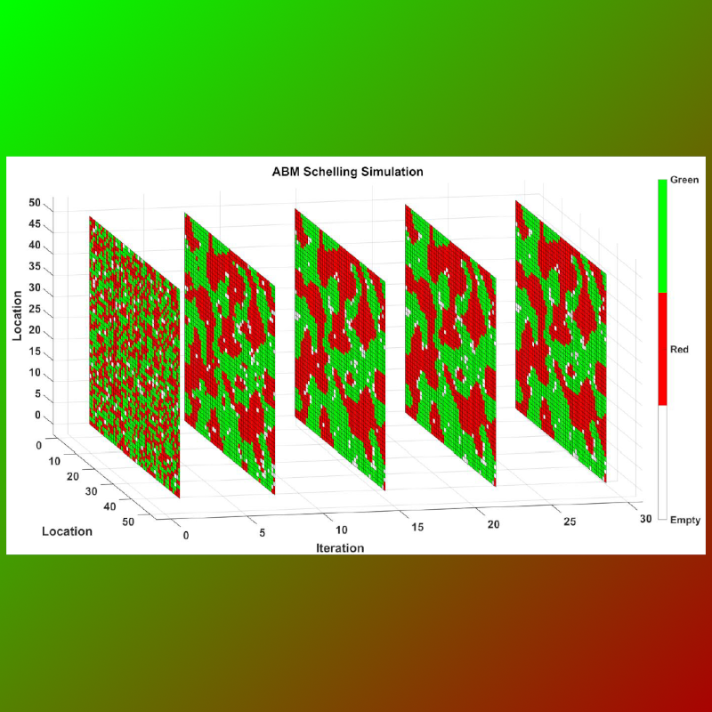
Agent-Based Modeling
An iterative MATLAB implementation of the Schelling segregation model, exploring emergent pattern formation from local preference rules.
Details (2020–2021)
Simulates an iterative adaptation of the Schelling segregation model in MATLAB. Code available for private study or as a teaching tool.
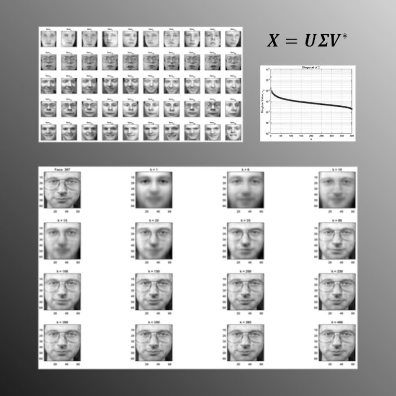
Eigenfaces
Singular value decomposition applied to face image data in MATLAB.
Details (2020–2021)
Applies singular value decomposition to the Olivetti dataset to identify common features of the human face.
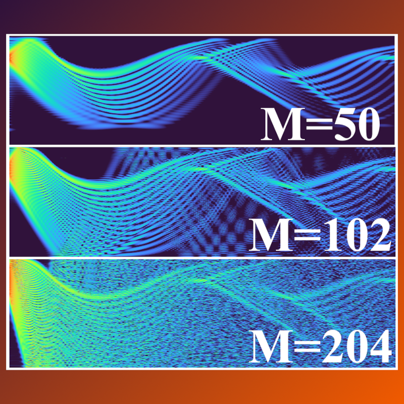
Computational Ocean Acoustics
Modeling of acoustic propagation in the ocean environment.
Details (2021)
Project-management work leading teams of PhD-level acoustic modeling experts motivated a study of MATLAB implementations across several ocean acoustic propagation techniques. Shown here is the Normal Modes method: as a guitar string sums vibrational modes to form a note, the same approach sums a finite number of modes under ocean boundary conditions to obtain the pressure field, visualized as a contour plot. Code modified from oalib-acoustics.org.
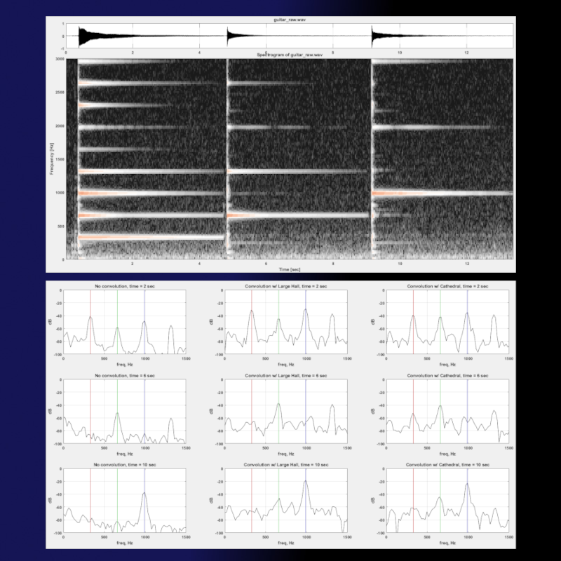
Digital Signal Processing
Applying concepts in MATLAB to build intuition.
Details (2020)
At least seven electrical engineering textbooks introduce convolution solely as an applied mathematics algorithm (flip, shift, multiply, sum). A mechanical-engineering path through graduate signal processing motivated a concrete link: convolution applied in MATLAB to simulate the reverberation effect used in digital audio workstation software. Demo available for private study or teaching.
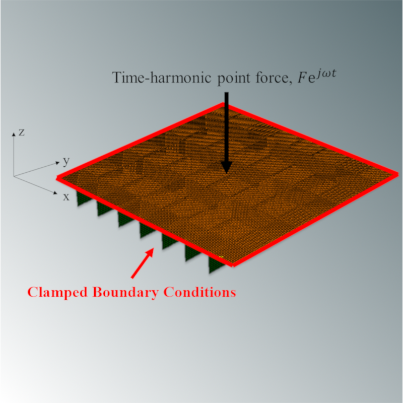
Structural Acoustics Research
Analyzing periodic structures using the finite element method.
Details (2018)
Periodic structures are common across industries. Finite element and wavenumber transform analysis quantified the structural acoustic performance of a clamped plate over stiffener thickness and plate thickness as design variables. Performed during part-time MSME study at Penn State, advised by Professor Alok Sinha, and published in ASME IMECE 2019 conference proceedings.
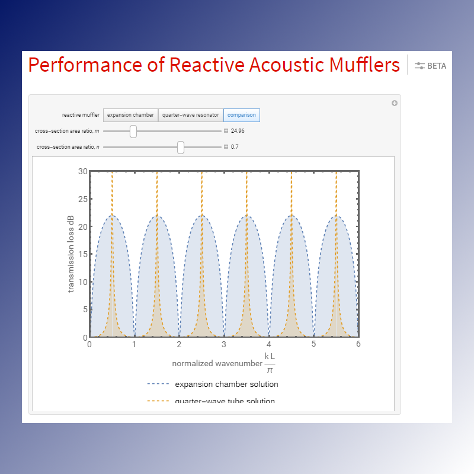
Performance of Reactive Acoustic Mufflers
An interactive Mathematica demonstration for the Wolfram Demonstrations Project.
Details (2016)
An undergraduate path through a graduate engineering acoustics course on noise control raised a specific question: how cross-sectional area in expansion chamber and quarter-wave resonator designs affects acoustic performance. A Mathematica demonstration answered it and was accepted to the Wolfram Demonstrations Project in 2016.
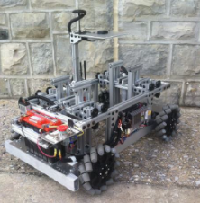
Smart Acoustic Monitoring System
Sponsored by the NASA Langley Research Center.
Details (2014–2015)
A senior capstone project, advised by Professor Chris Fuller at Virginia Tech, designed a faster deployment method for the acoustic phased arrays that NASA Langley Research Center uses outdoors to characterize the acoustic signatures of small aircraft and unmanned aerial systems. Awarded "Best in Innovation & Creativity" at the 2015 Capstone Realization of Engineering and Technology (CREATE) Exposition at Virginia Tech.
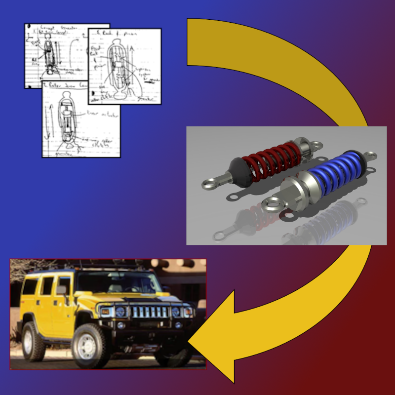
Energy Harvesting Shock Absorber
Performed for the Center for Energy Harvesting Materials and Systems at Virginia Tech.
Details (2015)
Advised by Professor Lei Zuo, with guidance from Dr. Lirong Wang and Dr. Lin Xu at Virginia Tech, the project designed a method for recovering dissipated energy in a conventional automobile shock absorber retrofitted onto a Hummer H2. Preliminary designs and findings carried into a subsequent senior design project, "2015-2016 Senior Design: Energy Harvesting from Suspension."
Get in Touch
Questions? Comments? Feedback? Kindly reach out to jblochb2@jhu.edu.
The views, opinions, and content on this website belong to Joseph Blochberger and do not necessarily reflect the positions of either the Johns Hopkins University Applied Physics Laboratory, the General Dynamics Corporation (together with any subsidiary of the corporation), or any other educational institution or company.